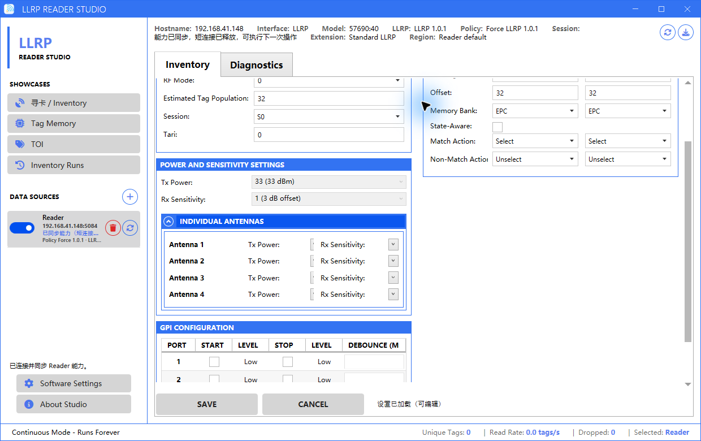
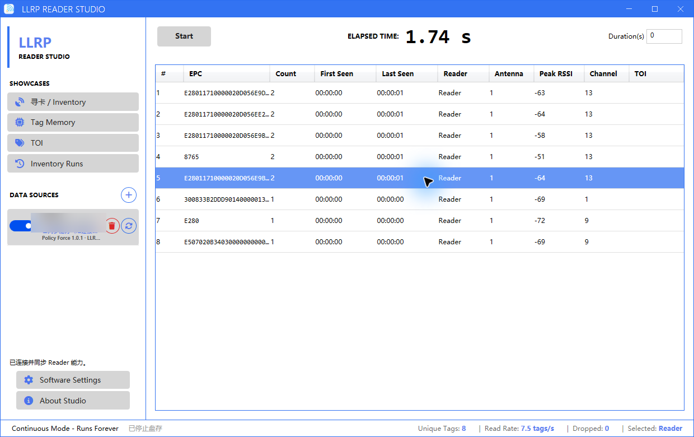

01 / OFFICIAL DESKTOP CLIENT
LLRP Reader Studio User Manual
LLRP Reader Studio is the flagship Windows desktop client of LlrpReaderPlatform. Featuring hardware-accelerated rendering, industrial-grade parameter configuration, and high-throughput tag reporting pipelines for field testing and reader tuning.
1. Installation & Data Locations
Download LlrpReaderPlatform-v2.0.4-win-x64.zip from Releases, extract to any directory, and run LlrpReaderPlatform.exe.
Default Storage Locations:
- SQLite Database:
%LocalAppData%\LlrpReaderPlatform\llrp-reader-platform.db(Stores reader profiles, tag lists, runs). - Log Files:
%LocalAppData%\LlrpReaderPlatform\logs\(ui-*.log,platform-*.log,sdk-*.log). - Snapshots:
%LocalAppData%\LlrpReaderPlatform\inventory-snapshots\.
2. Data Sources Management
Click Data Sources in the left sidebar to manage reader endpoints:

- Add Reader: Click Add Data Source, input Reader Name, Host / IP, LLRP TCP Port (default
5084), and Protocol Version policy. - Probe: Click Probe. The client performs a brief handshake to retrieve Model Name, Firmware Version, and frequency tables; Impinj extensions are automatically bound if detected.
- Save & Activate: Click Save to store the profile in SQLite, then click Activate to synchronize capabilities. The socket disconnects immediately, updating status to "Capabilities Synced".
3. Inventory Streaming

- Start Inventory: Click Start. The platform establishes an exclusive session, compiles and activates the ROSpec, and displays live tag streams.
- Live Metrics: Observe ELAPSED TIME, Unique Tags, Read Rate (tags/sec), and Dropped reports.
- Column Customization: Right-click on any grid header to toggle
EPC,TID,PC Bits,Peak RSSI,Antenna,Channel,Count,Timestamps, andTag List (TOI Alias). - Stop: Click Stop to halt the ROSpec, flush in-flight buffers, export run snapshots, and close the session.
4. Reader Settings Configuration
Tab 1: Inventory & RF Configuration
- Antenna & RF: Global Tx Power / Rx Sensitivity, or check Individual Antennas for per-port tuning.
- Gen2 Parameters: Gen2 Session (S0~S3), Inventory Target (A/B), Tag Population estimate, and Report Every interval.
- Gen2 Filters: Configure Filter 1 / Filter 2 for mask-based EPC/TID filtering.
- Impinj Extensions: Impinj FastID (auto-attach TID), Search Mode (Dual Target / Single Target / Reset), RF Phase, and Doppler frequency shifts.
5. GPIO Diagnostics & Control
- 4-Channel GPO Control: Dedicated high/low switches to trigger external alarms or industrial relays via
SET_READER_CONFIG. - GPI Monitoring: Click Refresh GPI to poll current digital input levels. Configure GPI Start/Stop triggers in Tab 1 for automated inventory.
6. Tag Memory Access
- Target Specification: Input target
EPCorTID. - Memory Bank: Select
0 - Reserved,1 - EPC,2 - TID, or3 - User. - Parameters: Set
Word PointerandWord Count(1 Word = 16-bit Hex). - Execute: Provide
Access Passwordif protected, then click Read or Write.
7. TOI (Tag of Interest) Aliases & Highlighting
Map raw Hex EPC codes to human-readable names, color highlights, and categorization groups in real-time inventory grids.
8. Inventory Runs History & Snapshots
Audit historical runs, stop reasons, summary statistics, and export CSV/JSON snapshots or raw RawReports streams.
9. Troubleshooting & FAQ
sdk-*.log for exact LLRP error codes.